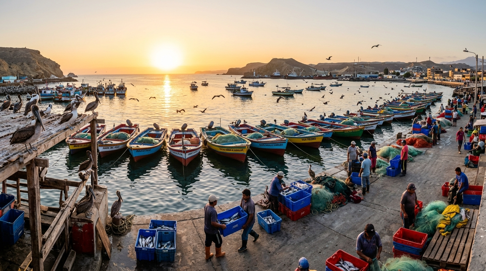

PESCA-CLICK PAITA v2.4
Explora de forma independiente cada uno de los 10 Puntos de la Presentación Digital, la Fundamentación Ética y el Guion Oral de 3 Minutos. Cada tarjeta abre su propia página web con diseño ejecutivo, imágenes de IA y métricas auditadas.
Puntos de Evaluación Oficial (Haz click en cualquiera para entrar):

1. Nombre y Descripción del Negocio
Arquitectura de Plataformas y Servicios TI aplicada al Sector Pesquero
2. Problema y Necesidad Identificada
Diagnóstico de Campo con 25 Armadores de Paita y 45 Cebicherías en Piura

3. Propuesta de Valor y Diferenciación
Modelo de Beneficio Mutuo Simétrico (Win-Win) con Garantía Sanipes
4. Público Objetivo y Mercado Potencial
Segmentación B2B de Alta Demanda Hidrobiológica en Piura y Sullana

5. Estrategias de Marketing y Comercialización
Estrategia B2B Omnicanal con Demostración en Vivo en Cocina
6. Recursos Necesarios y Proceso Productivo
Ciclo Logístico y Tecnológico Integrado de 5 Etapas (03:30 AM a 07:00 AM)
7. Inversión Inicial (CAPEX) y Estructura de Costos (OPEX)
Presupuesto Financiero Real Auditado para Puesta en Marcha
8. Proyección de Ingresos, Utilidad y Rentabilidad
Evaluación Económica a 3 Años con Indicadores VAN, TIR y Payback
9. Estrategias de Sostenibilidad Ambiental, Económica y Social
Modelo de Triple Impacto Alineado a los ODS de las Naciones Unidas
10. Conclusiones y Recomendaciones
Dictamen de Innovación Tecnológica y Aporte Profesional de la Carrera APSTI
Parte 2: Fundamentación de Sostenibilidad y Ética
3 Compromisos Éticos y Verificación Rigurosa de Datos Reales vs Proyecciones
Parte 3: Guion de Exposición y Sustentación Oral
Pitch Estructurado de 3 Minutos para Obtener 100 Puntos frente a la Docente
Especies del Muelle de Paita (Fichas Técnicas B2B):
Fotografías generadas por IA de las especies comercializadas en el piloto.